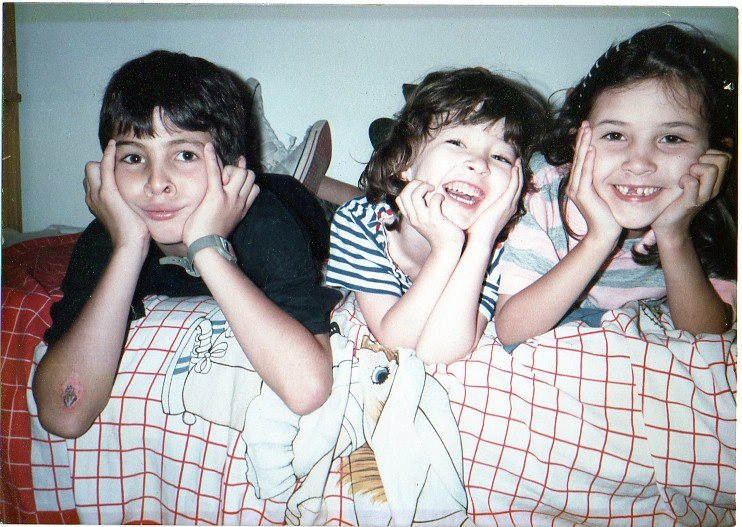

<!DOCTYPE html>
<html lang="pt<head>
	<meta charset="UTF-8"/>
	<title>AH! Ana Higo</title>
	<link rel="stylesheet" href="https://cdnjs.cloudflare.com/ajax/libs/font-awesome/5.13.0/css/all.min.css">
	<link rel="stylesheet" type="text/css" href="style.css"/>
	<style>
/* sections */
		.vinho-section {
			background-color: rgb(66,18,45);
			padding: 70px 0px;
			width: 100%;
		}
		
		.cinza-section {
			background-color: rgb(91, 94, 100);
			padding: 50px 0px;
			width: 100%;
		}

		.branco-section {
			background-color: rgb(255, 255, 255);
			padding: 50px 0px;
			width: 100%;
		}

/* divs */
		.div-lista {
			display: flex;
			flex-wrap: wrap;
			max-width: 80%;
			margin: auto;
		}

		.div-lista > div {
			flex: 1 1 100px;
			margin: 10px;
		}

		.div-lista-frases {
			display: flex;
			flex-wrap: wrap;
			flex-direction: column;
			max-width: 80%;
			margin: auto;
		}

		.div-lista-frases > div {
			flex: 1 1 50px;
			margin: 10px;
		}

		.fotos {
			display: flex;
			flex-wrap: wrap;
			justify-content: space-around;
			max-width: 80%;
			margin: auto;
		}

		.lista-vinho {
			background-color: rgb(255,255,255);	
			color: rgb(66,18,45);
			text-align: center;
			padding: 20px;
			font-weight: 900;
		}

		.lista-vinho-texto {
			background-color: rgb(255,255,255);	
			color: rgb(66,18,45);
			text-align: center;
			padding: 20px;
			width: 80%;
			margin: auto;
			font-weight: 900;
		}

		.lista-cinza{
			background-color: rgb(255,255,255);	
			color: rgb(91, 94, 100);
			text-align: center;
			padding: 20px;
			font-weight: 900;
		}

/* h e p */
		.h2-title {
			color: rgb(255,255,255);
			font-size: 2rem;
			text-align: center;
		}

		h3 {
			font-size: 1.25rem;
		}

		p{
			font-size: 1.5rem;
		}
		
		ul {
			list-style: none;
			font-size: 1.3rem;
		}

/* links */
		p li:hover {
  		background-color: rgb(114, 112, 112);
		}

		p a {
  		color: rgb(66, 18, 45);
  		text-decoration: none;
		}

		p a:hover {
  		color: rgb(114, 112, 112);
  		font-weight: 900;
		}

/* media query */
		@media screen and ( max-width : 1024px ) {

			.div-lista > div {
				flex: 1 1 500px;
			}

		}

	</style>
</head>

<body>
<!-- início cabeçalho  -->
	<header>
		<div class="container">
			<div class="container-header-main">
				<div class="logo-logo">
					<a href="index.html"></a>
				</div>

				<div class="text-title">
					<h1>Ana Higo</h1>
					<h2>Arquiteta, Empreendedora na Área de Alimentação e Estudante de Desenvolvimento de Software</h2>
				</div>	
				<div class="main-empty"></div>
			</div>

			<div class="container-header-menu">
				<div class="menu-empty"></div>
				<nav class= "menu-navegacao-site">
					<ul>
						<li><a href="index.html">Apresentação</a></li>
						<li><a href="perfil.html">Mais sobre Ana</a></li>
						<li><a href="experiencia.html">Experiências Profissionais</a></li>
						<li><a href="formacao.html">Formação Acadêmica e Cursos</a></li>
						<li><a href="portifolio.html">Portifólio</a></li>
					</ul>
				</nav>
			</div>
		</div>
	</header>
	<div class="header-empty"></div>

<!-- início aulas, viagens -->
		<section class="vinho-section">
			<h2 class="h2-title">Sobre Ana Higo</h2>
			<div class="lista-vinho-texto">
				<p> Sou uma pessoa tranquila, com desejo constante de novos aprendizados, sempre buscando oportunidades novas. Um pouco tímida, prefiro a companhia das pessoas de quem gosto, amigos e família, em vez de grandes reuniões. Desafio é minha palavra preferida: seja físico, intelectual ou social, sempre em busca de superação – minhas dificuldades se transformam em motivação e sigo mudando, pouco a pouco. Para me conhecer um pouquinho mais, confira o que gosto, o que já fiz e o que conheço.</p>
			</div>
		</section>

		<section class="cinza-section">
			<div>
				<h2 class="h2-title">Curiosidades:</h2>
				<div class="div-lista">
					<div class="lista-cinza">
						<p>O que eu gosto de fazer:</p>
						<ul>
							<li>&#10057; Viajar para qualquer lugar, Brasil ou mundo afora, praia, cidade, vale ou serra;</li>
							<li>&#10057; Ouvir música | ir a show | ouvir alguém tocar um instrumento;</li>
							<li>&#10057; Dançar ao ar livre e me conectar com a música;</li>	
							<li>&#10057; Assistir a boas séries, filmes ou documentários, principalmente os surpreendem ou me fazem refletir sobre algum assunto;</li>
							<li>&#10057; Filosofar sobre a vida, as relações ou a existência humana, em uma mesa de bar.</li>
							<li>&#10057; Jogatinas de baralho com a família.</li>
						</ul>
					</div>
	
					<div class="lista-cinza">
						<p>Minhas aventuras:</p>
						<ul>
							<li>&#10057; Acampei na praia e na serra em grandes festivais de música eletrônica;</li>
							<li>&#10057; Saltei de paraquedas;</li>
							<li>&#10057; Fiz mergulho superficial e flutuação em mar aberto, rios e grutas;</li>
							<li>&#10057; Participei de aulas de sky aquático e mergulho de profundidade;</li>	
							<li>&#10057; Fiz caique em mar aberto;</li>	
							<li>&#10057; Fiz passeios em bote em rios que tinham quedas;</li>	
							<li>&#10057; Pratiquei rapel, arvorismo e tirolesa.</li>
							<li>&#10057; Trenei trilhas em serras.</li>
						</ul>
					</div>
				</div>
			</div>

			<div>
				<h2 class="h2-title">Atividades que já pratiquei:</h2>
				<div class="div-lista">
					<div class="lista-cinza">
						<p>Dança e Arte</p>
						<ul>
							<li>&#10057; Balé Clássico;</li>
							<li>&#10057; Jazz;</li>
							<li>&#10057; Teatro;</li>
							<li>&#10057; Violão;</li>
							<li>&#10057; Desenho;</li>
							<li>&#10057; Pole Dance.</li>	
						</ul>
					</div>
	
					<div class="lista-cinza">
						<p>Esporte</p>
						<ul>
							<li>&#10057; Natação;</li>
							<li>&#10057; Capoeira;</li>
							<li>&#10057; Basquete;</li>
							<li>&#10057; Handbol;</li>
							<li>&#10057; Patins.</li>	
							<li>&#10057; Musculação, Ginástica e Corrida.</li>			
						</ul>
					</div>
				</div>
			</div>

			<div>
				<h2 class="h2-title">Alguns países que conheço:</h2>
				<div class="div-lista">
					<div class="lista-cinza">
						<p>América</p>
						<ul>
							<li>&#10057; Argentina</li>
							<li>&#10057; Chile</li>
							<li>&#10057; Estados Unidos</li>
							<li>&#10057; México</li>
						</ul>
					</div>

					<div class="lista-cinza">
						<p>Europa</p>
						<ul>
							<li>&#10057; Portugal</li>
							<li>&#10057; Espanha</li>
							<li>&#10057; França</li>
							<li>&#10057; Holanda</li>
						</ul>
					</div>
				</div>
			</div>

			<div>
				<h2 class="h2-title">Algumas cidades brasileiras que conheço:</h2>
				<div class="div-lista">
					<div class="lista-cinza">
					<p>Cidades Litorâneas:</p>
					<ul>
						<li>&#10057; Maceió | AL</li>
						<li>&#10057; Porto Seguro - Trancoso |BA</li>
						<li>&#10057; Florianópolis | SC</li>
						<li>&#10057; Salvador | BA</li>
						<li>&#10057; Pratigi - Festival Universo Paralello | BA</li>
						<li>&#10057; Comandatuba | BA</li>
						<li>&#10057; São Sebastião - Ubatuba - Bertioga | SP</li>
						<li>&#10057; Guarujá - Santos | SP</li>
						<li>&#10057; Paraty | RJ</li>
						<li>&#10057; Rio de Janeiro | RJ</li>
					</ul>
				</div>

				<div class="lista-cinza">
					<p>Outras Cidades:</p>
					<ul>
						<li>&#10057; Bonito | MS</li>
						<li>&#10057; Brasília | DF</li>
						<li>&#10057; Gramado - Canela | RS</li>
						<li>&#10057; Monte Verde | MG </li>
						<li>&#10057; Campos do Jordão - Sao Francisco Chavier | SP </li>
						<li>&#10057; Itatiaia - Penedo - Visconde de Maua | RJ</li>
						<li>&#10057; São Tomé das Letras | MG</li>
						<li>&#10057; Brotas | SP</li>
						<li>&#10057; Campo Grande | MS</li>
						<li>&#10057; Curitiba | PR</li>
					</ul>
				</div>
			</div>
		</section>

		<section class="vinho-section">
			<div>
				<h2 class="h2-title">Top 5 | Filmes |</h2>
				<div class="div-lista">
					<div class="lista-vinho">
						<p>Internacionais</p>
						<ul>
							<li>&#10057; Na natureza selvagem | Sean Penn |</li>
							<li>&#10057; Forrest Gump | Robert Zemeckis |</li>	
							<li>&#10057; Avatar | James Cameron |</li>
							<li>&#10057; ET - O extraterrestre | Steven Spielberg |</li>
							<li>&#10057; Trilogia de volta para o futuro | Robert Zemeckis |</li>
						</ul>
					</div>

					<div class="lista-vinho">
						<p>Nacionais</p>
						<ul>
							<li>&#10057; Cidade de Deus | Fernando Meirelles |</li>
							<li>&#10057; O auto da compadecida | Guel Arraes |</li>
							<li>&#10057; Elis Regina |  Hugo Prata |</li>	
							<li>&#10057; Tropa de elite | José Padilha |</li>	
							<li>&#10057; Carandiru | Hector Babenco |</li>	
						</ul>
					</div>	
				</div>
			</div>

			<div>
				<h2 class="h2-title"> Top 5 | Animações |</h2>
				<div class="div-lista">
					<div class="lista-vinho">
						<p>Antigas</p>
						<ul>
							<li>&#10057; Dumbo | Walt Disney |</li>
							<li>&#10057; Aristogatas | Walt Disney |</li>
							<li>&#10057; Branca de Neve e os Sete Anões | Walt Disney |</li>	
							<li>&#10057; A Dama e o Vagabundo | Walt Disney |</li>
							<li>&#10057; Pinóquio | Walt Disney |</li>
						</ul>
					</div>

					<div class="lista-vinho">
						<p>"Novas"</p>
						<ul>
							<li>&#10057; Divertida Mente | Walt Disney - Pixar |</li>
							<li>&#10057; O Rei Leão | Walt Disney |</li>
							<li>&#10057; Procurando Nemo | Walt Disney - Pixar |</li>	
							<li>&#10057; Wall-e | Walt Disney - Pixar |</li>	
							<li>&#10057; Up - Altas Aventuras | Walt Disney - Pixar |</li>
						</ul>
					</div>	
				</div>
			</div>

			<div>
				<h2 class="h2-title">Top 5 | Séries |</h2>
				<div class="div-lista">
					<div class="lista-vinho">
						<p>Antigas</p>
						<ul>
							<li>&#10057; Anos Incríveis </li>
							<li>&#10057; Confissões de Adolescente</li>
							<li>&#10057; Friends</li>	
							<li>&#10057; E.R.</li>
							<li>&#10057; Barrados no Baile</li>
						</ul>
					</div>

					<div class="lista-vinho">
						<p>"Novas"</p>
						<ul>
							<li>&#10057; This is us</li>
							<li>&#10057; The Crown</li>
							<li>&#10057; Messiah</li>	
							<li>&#10057; La casa de papel</li>	
							<li>&#10057; The Sinner</li>
						</ul>
					</div>	
				</div>
			</div>

			<div>
				<h2 class="h2-title">Top 5 | Músicas |</h2>
				<div class="div-lista">
					<div class="lista-vinho">
						<p>Internacionais</p>
						<ul>
							<li>&#10057; Black | Pearl Jam |</li>
							<li>&#10057; Waiting In Vain | Bob Marley |</li>
							<li>&#10057; Cry Baby | Janis Joplin |</li>	
							<li>&#10057; Over the rainbow | Israel Kamakawiwo'Ole |</li>
							<li>&#10057; How can I go on | Freddie Mercury |</li>
						</ul>
					</div>

					<div class="lista-vinho">
						<p>Nacionais</p>
						<ul>
							<li>&#10057; Chão de Giz | Elba Ramalho |</li>
							<li>&#10057; Força Estranha | Caetano Veloso |</li>
							<li>&#10057; Metamorfose ambulante | Raul Seixas |</li>
							<li>&#10057; Como nossos pais | Elis Regina |</li>	
							<li>&#10057; Aquarela | Toquinho |</li>	
						</ul>
					</div>	
				</div>
			</div>

			<div>
				<h2 class="h2-title">Top 5 | Livros |</h2>
				<div class="div-lista">
					<div class="lista-vinho">
						<p>Internacionais</p>
						<ul>
							<li>&#10057; Musashi | Eiji Yoshikawa |</li>
							<li>&#10057; Quando Nietzsche chorou | Irvin D. Yalom |</li>
							<li>&#10057; O caçador de pipas | Khaled Hosseini |</li>
							<li>&#10057; Cem Anos de Solidão | Gabriel García Márquez |</li>	
							<li>&#10057; O Pequeno Príncipe |	Antoine de Saint-Exupéry |</li>	
						</ul>
					</div>

					<div class="lista-vinho">
						<p>Nacionais</p>
						<ul>
							<li>&#10057; Antologia Poética | Carlos Drummond de Andrade |</li>
							<li>&#10057; Feliz Ano Velho | Marcelo Rubens Paiva |</li>
							<li>&#10057; O Diário de um mago | Paulo Coelho |</li>	
							<li>&#10057; Estrela da Vida inteira | Manuel Bandeira |</li>	
							<li>&#10057; Ou isto ou aquilo | Cecilia Meireles |</li>	
						</ul>
					</div>	
				</div>
			</div>

			<div>
				<h2 class="h2-title">Top 5 | Arquitetos |</h2>
				<div class="div-lista">
					<div class="lista-vinho">
						<p>Internacionais</p>
						<ul>
							<li>&#10057; Norman Foster</li>
							<li>&#10057; Zaha Hadid</li>
							<li>&#10057; Shigueru Ban</li>	
							<li>&#10057; Frank lloyd Wright</li>	
							<li>&#10057; Le Corbuiser</li>		
						</ul>
					</div>

					<div class="lista-vinho">
						<p>Nacionais</p>
						<ul>
							<li>&#10057; Isay Weinfeld</li>
							<li>&#10057; Marcio Kogan</li>
							<li>&#10057; FGMF</li>
							<li>&#10057; Lina Bo Bardi</li>	
							<li>&#10057; Oscar Niemeyer</li>	
						</ul>
					</div>	
				</div>
			</div>

			<div>
				<h2 class="h2-title">Top 5 | Designers |</h2>
				<div class="div-lista">
					<div class="lista-vinho">
						<p>Internacionais</p>
						<ul>
							<li>&#10057; Philippe Starck</li>
							<li>&#10057; Karim Rashid</li>
							<li>&#10057; Charles Eames e Ray Eames</li>	
							<li>&#10057; Arne Jacobsen</li>	
							<li>&#10057; Eero Saarinen</li>		
						</ul>
					</div>

					<div class="lista-vinho">
						<p>Nacionais</p>
						<ul>
							<li>&#10057; Zanini de Zanine</li>
							<li>&#10057; Jader Almeida</li>
							<li>&#10057; Irmãos Campana</li>
							<li>&#10057; Carlos Motta</li>	
							<li>&#10057; Sérgio Rodrigues</li>		
						</ul>
					</div>	
				</div>
			</div>

			<div>
				<h2 class="h2-title">Top 5 | Frases ou Citações |</h2>
				<div class="div-lista-frases">
					<div class="lista-vinho">
						<ul>
							<li>"A verdadeira felicidade só existe quando é compartilhada." <br> Christopher McCandless</li>
						</ul>
					</div>
					<div class="lista-vinho">
						<ul>
							<li>"O ignorante afirma, o sábio duvida, o sensato reflete." <br> Aristóteles </li>
						</ul>
					</div>
					<div class="lista-vinho">
						<ul>
							<li>"Só sei que nada sei." <br> Sócrates</li>
						</ul>
					</div>
					<div class="lista-vinho">
						<ul>
							<li>"Ser feliz sem motivo é a mais autêntica forma de felicidade." <br> Carlos Drummond de Andrade</li>
						</ul>
					</div>
					<div class="lista-vinho">
						<ul>
							<li>“É sempre divertido fazer o impossível.” <br> Walt Disney</li>
						</ul>
					</div>
				</div>
			</div>	
		</section>
		<section class="cinza-section">
			<h2 class="h2-title">Minha família e amigos, são as preciosidades da minha vida!</h2>
			<div class="fotos">
				
				
				
				
			</div>
			<div class="fotos">
				
				
				
				
			</div>
		</section>
	</article>
	
<!-- início rodapé -->
	<footer class="footer-section">
		<div class="footer">
      <ul>
				<li><a href="https://www.facebook.com/ana.higo.5" target="_blank"><i class="fab fa-facebook"></i></a></li>
				<li><a href="https://www.instagram.com/ah_anahigo/" target="_blank"><i class="fab fa-instagram"></i></a></li>
        <li><a href="https://twitter.com/anahigo" target="_blank"><i class="fab fa-twitter"></i></a></li>
				<li><a href="https://github.com/anahigo" target="_blank"><i class="fab fa-github"></i></a></li>
				<li><a href="https://www.linkedin.com/in/ana-higo" target="_blank"><i class="fab fa-linkedin"></i></a></li>
			</ul>
		</div>	
	</footer>

</body>

</html>